Continuing with the theme of learning practical programming skills, in this lab we will introduce you to IntelliJ which will be a powerful tool to help you develop code in Java. This lab unfortunately contains a bit more setup, but after this lab you should be fully set up for the rest of the semester. Again the setup portion of this lab must be completed by all students, but the rest of the work can be completed with a partner (more details below). Finally this lab will give you some practice on programming questions involving IntLists.
Before completing this lab, make sure that you have completed the entirety of Lab 1. It is crucial that you do the setup in Lab 1 to continue the course, so please prioritize this. Without it you will be unable to receive starter code, submit assignments, etc. Both Lab 1 and Lab 2 will be due this Friday 1/31 at 11:59pm.
We would like to especially reemphasize the importance of understanding Git. Version control systems are essential in industry jobs, as working with others quickly becomes very difficult without them. If you did not read sections A, B and F of the git guide please do so and make sure you understand these. If you have any questions about Git please try to resolve them by discussing with your partner or by asking any TA or AI (academic intern) in lab.
Table of Contents
A. Partner Labs
For this lab and the remainder of the labs in the course (unless explicitly mentioned otherwise), you will be able to work with a partner to complete the lab assignment. Computer science is almost always a collaborative discipline, so learning how to work and code with others is an incredibly important skill to learn. Some important rules on working with partners are described below. Please make sure that you understand all of these policies so that you do not commit an act of academic dishonesty.
- Partnerships in this class are comprised of only two students. This means you are allowed to openly share code with only one other student in the class. Sharing code with more than your partner will be considered academic dishonesty. There will be no groups of three.
- Each student must submit their lab assignment, even if it is identical. If you do not submit the assignment and your partner does, you will not get credit for the assignment.
- You are highly encouraged to find your partner in lab. There will not be any formal partner matching or registration for the semester. This means that each week you could choose to work with a different partner. Later we will release a piazza post for people to find partners.
- For each week's lab, you must fill out the
partner.txtfile with your partner's name,cs61b-***login, and @berkeley.edu email. We will use this to track your partnership information for each lab.
You and your partner will be able to work in a way that you find suitable. We encourage you to try different style of work to see what seems to work best. Say if you both want to write your own code, you can brainstorm ideas together, implement the code independently, then discuss your different approaches. Another popular practice is pair programming where only one computer is used and one partner "drives" by controlling the computer. The other partner watches the code that they are typing and provides feedback or ideas. If pair programming it is typical to switch who the "driver" is every 15-20 minutes to allow both partners to contribute.
B. CS61B Software Setup
Recall from Lab 1 that you weren't able to run your testing files on your personal computer. That is because the testing files used a library called JUnit which we had not setup yet. Upon completion of this section, you should no longer have the issue with the missing packages. For this we must update the CLASSPATH environment variable. You can think about the CLASSPATH as the list of locations for java to look for *.class file to be ran from your terminal. In other words, it specifies the locations of packages and programs for the Java compiler. Before we did not specify the location of the JUnit files, so they could not be compiled.
We will also have you setup the PATH variable. This is similar to the CLASSPATH variable, but instead is the list of locations for executable programs to be ran from your terminal. At various points in the semester you might need to run some of our software that we have distributed in the cs61b-software repository (that you downloaded onto your computer last lab). By setting up the PATH, you should be able to run all of these commands directly from terminal.
Mac Setup
Note: If you do not have a Mac computer, skip this step.
You should have a hidden file called .bash_profile in your home directory. This file is part of the initialization of your shell and we will be appending to it. Please execute the next two lines which will first add the one line of necessary setup code and then the next one which effectively refreshes the shell by executing all of the code in your .bash_profile.
echo 'source $HOME/cs61b-software/adm/login' >> ~/.bash_profile
source ~/.bash_profileNote: If you are on Mac OS X Catalina, you may have to replace .bash_profile with .zprofile in the above commands.
Linux Setup
Note: If you do not have a Linux computer, skip this step.
You should have a hidden file called .bashrc in your home directory. This file is part of the initialization of your shell and we will be appending to it. Please execute the next two lines which will first add the one line of necessary setup code and then the next one which effectively refreshes the shell by executing all of the code in your .bashrc.
echo 'source $HOME/cs61b-software/adm/login' >> ~/.bashrc
source ~/.bashrcWindows Setup
Note: If you do not have a Windows computer, skip this step.
Editing the CLASSPATH and PATH variables will involve using Windows Powershell. THIS MEANS THAT YOU SHOULD NOT EXECUTE THE FOLLOWING COMMANDS IN GIT BASH or they will not work. First you need to open up a Windows Powershell command prompt as an administrator as shown in the next two images below. You will be prompted with "Do you want to allow this app to make changes to your device?", go ahead and select "Yes".
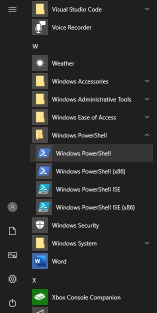 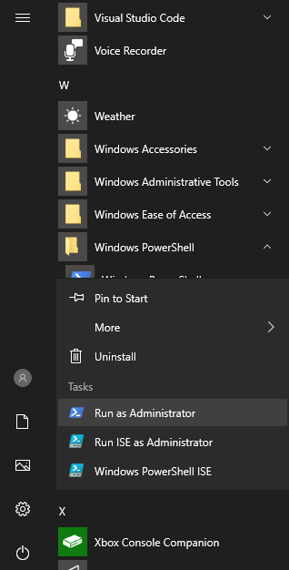
After opening a terminal as an administrator you should be greeted with a prompt that looks like the following. If the top bar does not say "Administrator: PowerShell", please try opening it as an administrator again. Without this the following two commands will fail.
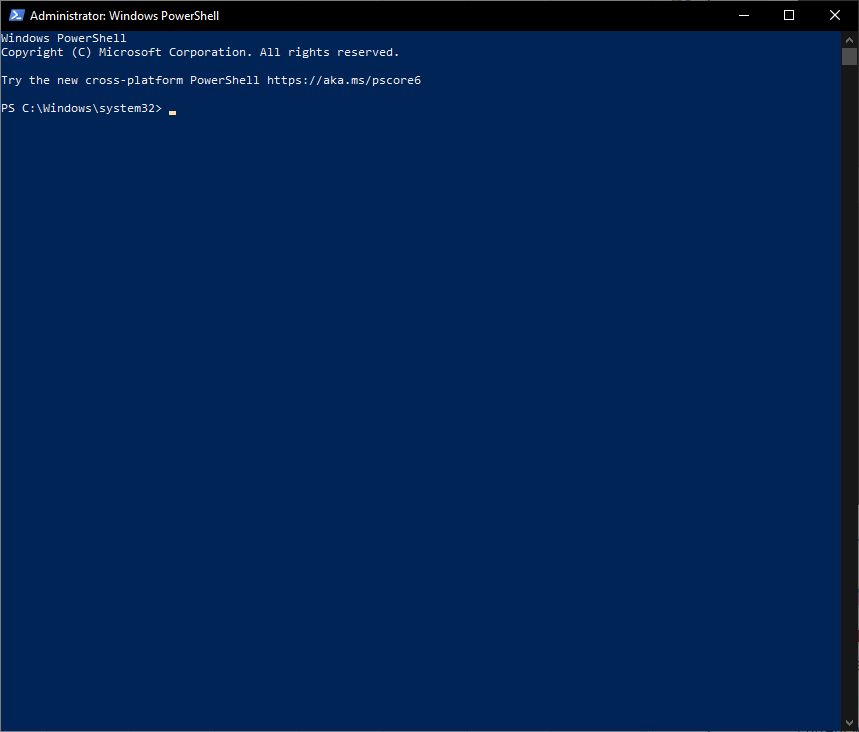
Now execute the following two commands. Neither of these will produce any output. Again only execute these in an administrator PowerShell, not Git Bash.
[System.Environment]::SetEnvironmentVariable('CLASSPATH', "$HOME\cs61b-software\lib\*;.", [System.EnvironmentVariableTarget]::Machine)
[System.Environment]::SetEnvironmentVariable('PATH', "$Env:Path;$HOME\cs61b-software\bin", [System.EnvironmentVariableTarget]::Machine)If neither of the commands produced any output, you are finished and you should close the PowerShell window as we will not longer need it.
Restart Git-Bash after this step so the changed environment variables can take effect
C. IntelliJ IDE Setup
Introduction to IntelliJ and IDEs
Previously in Lab 1, you were editing your Java code in a text editor of your choice and then compiling and running code through the terminal. Although this worked, the process was slightly disjointed and you had to switch back and forth between your editor and terminal. Additionally, most text editors do not have that much built in functionality to help you code in Java. Starting this week we will use IntelliJ which is an Integrated Development Environment or IDE. An IDE is a single program which combines typically a source code editor, compile / run tools, and a debugger. Some IDEs like IntelliJ contain even more features such as an integrated terminal and a graphical interface for Git commands. Finally IDEs also have tools like code completion which will help you write Java faster.
We will not be forcing you to use IntelliJ if you choose not to, but we recommend that all students do use it. The debugger and other features will make it well worth the time it takes to learn as they should make you a more efficient programmer and one that can solve problems on your own. From this point forward we will assume that you are using IntelliJ and if you do not we will not necessarily be able to offer the same support (e.g. if you use another program like VSCode for this class, our staff will not be able to help you with any problems like we would had you chosen to use IntelliJ).
Downloading and Installing IntelliJ
Note: If you are only planning on using the lab computers, skip the setup.
- You'll need to install the Community Edition of IntelliJ from the Jetbrains website. As a student you can actually get a student license for the Ultimate version, but there are not any additional features that we will use for this class. It is recommended that you proceed with the Community Edition.
- After selecting the appropriate version for your OS (Mac OSX, Windows, or Linux), click download.
- Run the install file and follow the prompts to install IntelliJ onto your computer. You can stick to all the default settings. It might take a few minutes to install, just wait until it has completed before continuing. If you are working with a partner ask them how their semester is going. You can use this down time to get to know them better than you do right now!
Installing Plugins
We will now instruct you to install three plugins to help you add some CS61B specific functionality to IntelliJ. The three plugins are Python Community Edition (this will allow you to run python scripts from inside IntelliJ), Java Visualizer (this will allow you to see visualizations of your code similar to what you might see on python tutor), and CS 61B (includes among other things a style checker). Follow the steps below to install these plugins.
- Start up IntelliJ. If you're on the lab computers, you can start up IntelliJ by using the command
/share/instsww/bin/idea.shin a terminal window. You might be asked to import settings, choose to not do this. Also if prompted accept the terms and conditions. - In the Welcome to IntelliJ IDEA window, click the Configure -> Plugins button on the bottom right of the window.
- In the window that appears, enter "Python Community Edition" in the search bar at the top. Select the "Python Community Edition" plugin by JetBrains and click the green Install button. Wait for the plugin to download and install.
- Now repeat step 3, but instead install the "Java Visualizer" plugin by Eli Lipsitz.
- Finally repeat step 3 once more, but instead install the "CS 61B" plugin by CS 61B Course Staff. If nothing comes up make sure you have a space in the name.
- Once all of the plugins have installed, click the green Restart IDE button to finalize the installation.
Before you move on make sure that you have successfully added the Python Community Edition plugin, the Java Visualizer plugin, and the CS 61B plugin before moving on. A few parts later in the lab will refer to the functionality of these plugins which will not exist unless you have correctly installed them.
Setting Up SDKs
There will be a shared structure to pretty much every programming assignment you will complete this semester so we will configure the default settings so that you should not have to do this for every new assignment.
- If not already running, start up IntelliJ. Again for lab computers, you can start up IntelliJ by using the command
/share/instsww/bin/idea.shin a terminal window. In the Welcome to IntelliJ IDEA window, click the Configure -> Structure for New Projects button on the bottom right of the window. After doing this step, you should see a window that looks like the following.
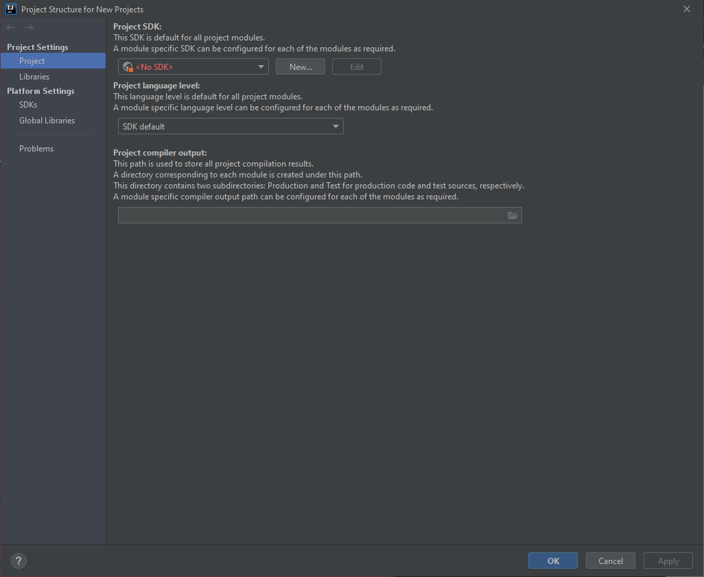
For the Project SDK option, you should select the option "11" from the list which corresponds to using Java 11. Once selected your screen should now look like the following.
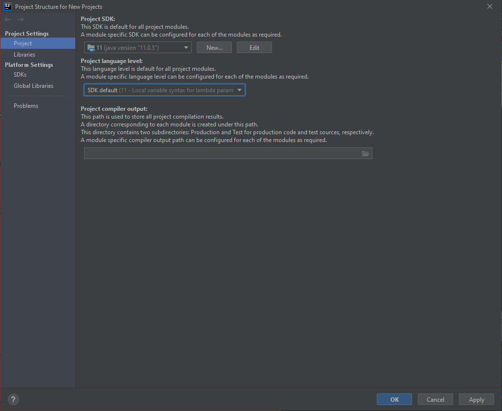
Next we will add the Python SDK. Now navigate to the "Platform Settings -> SDKs" section in the sidebar. This should take you to a window that looks something like the below.
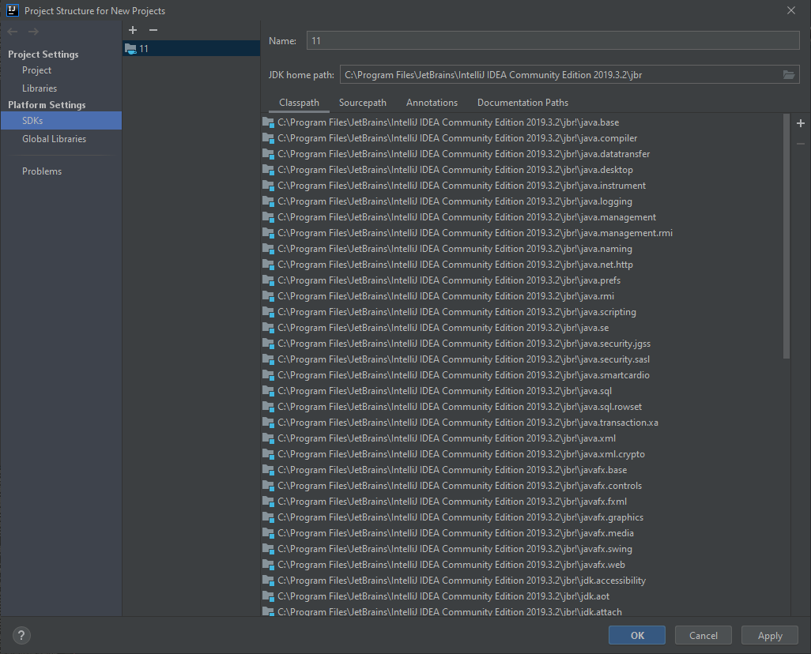
Click the "+ -> Python SDK" button to add a new SDK. Once open select the "System Interpreter" option from the sidebar and you should be greeted with a screen that looks like the following.
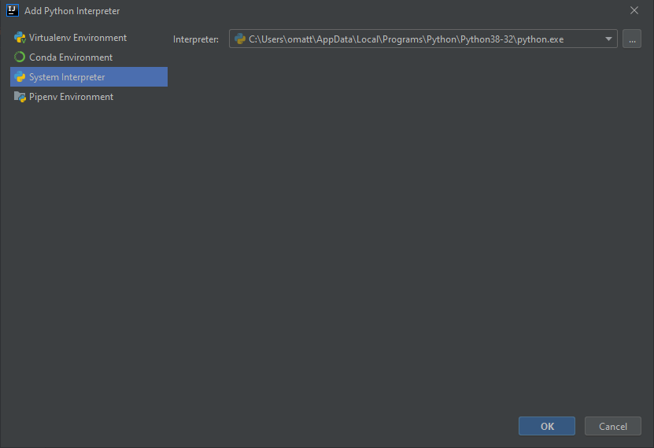
It is possible that IntelliJ will already know where your python executable is, but if not you can click the "..." option and then select the corresponding location of the
python3executable (macOS and Linux) or thepython.exeexecutable (Windows). If you are unsure where this might be try using the commandwhich python3(macOS and Linux) orwhich python(Windows) in your terminal. This should print out the print out the path for you!After completing this step you should now see two SDKs, "11" and "Python 3.8" (if your python version differs that should be fine as long as it is Python 3.5+)
Creating Projects
Before creating your first IntelliJ project, you must have the starter code for this lab. As usual, you can get the start files for this lab through Git. Before running these commands make sure you have committed and pushed any current work in your repo directory. If you do not remember what this means talk with your lab partner and / or check in with your lab TA. Once you are sure you have done this use the following commands. Note: you can still run the commands even if you have not committed and pushed, but this might cause merge conflicts, so it is best to just commit and push before merging in the new code.
git fetch shared
git merge shared/lab2 -m "Start lab2"
git pushNow that you have the starter code, we can setup your first project. The following instructions apply for both this Lab and for future assignments (homeworks, projects, and labs). Each time after using git fetch and git merge to retrieve the starter code for a new assignment, you will notice that you have a new assignment directory (e.g. next week, you'll get lab3/). Therefore, you can simply run through the following steps again. Don't be intimidated by the long section; this is because we've carefully screenshotted every step. In future iterations, setting up will likely involve pressing next for all steps and, if IntelliJ asks you to overwrite various housekeeping files (such as .iml files) because they already exist, respond "Yes" or "Overwrite" to those popup windows. This is so IntelliJ can automatically mark the new directories for your assignment for you as opposed to you manually marking source folders and/or modules.
- Start up IntelliJ. Again if you're on the lab computers, you can start up IntelliJ by using the command
/share/instsww/bin/idea.shin a terminal window. Upon opening IntelliJ, click on the "Import Project" option. We will use "Import Project" rather than "Create New Project" throughout the semester which will make setup slightly easier as IntelliJ will automatically mark *.java files as source code.
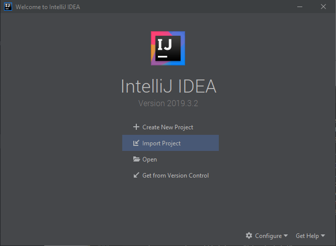
Find and choose the directory of your current assignment (for today's lab, it should be
~/repo/lab2), then press the OK button.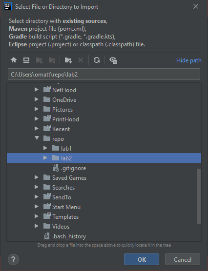
Make sure "Create project from existing sources" is selected and press next. You shouldn't have to change anything at this step.
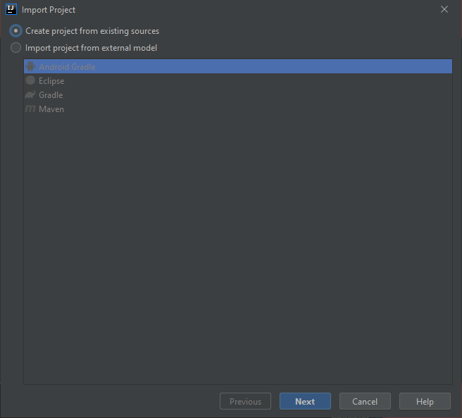
Leave these fields untouched and press next.

Again you should not have to do anything here so just click "Finish". For context, IntelliJ is automatically detecting what your Java files are and self-configuring itself to edit and run them.
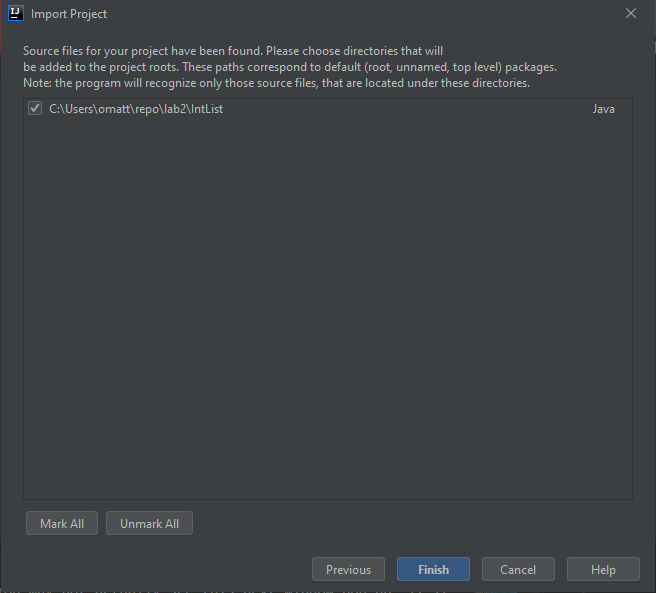
You should at this point be greeted with the main screen of IntelliJ which should look like the following. If you are greeted with any additional screens when setting up the project you can go ahead and select the default options for now.
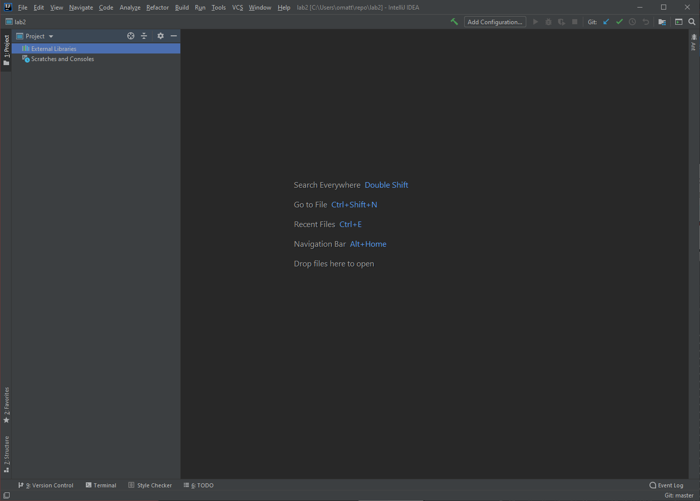
Finally we will setup the Java libraries that we will be using this semester, so that you do not have to
sshinto your instructional account to run any testing code. Navigate to the "File -> Project Structure" menu, then select "Libraries" in the sidebar. You should be greeted with a screen that looks like this.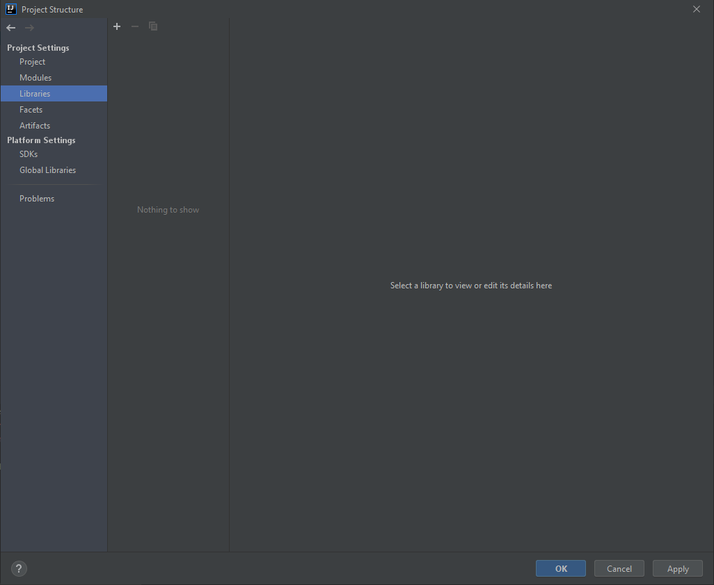
Click the "+ -> Java" button, which should prompt you to select the file location. Navigate to the
~/cs61b-software/libfolder and then select all of the*.jarfiles (i.e. select all of the files that end in.jarin the~/cs61b-software/libfolder). After selecting them your window should look like the following.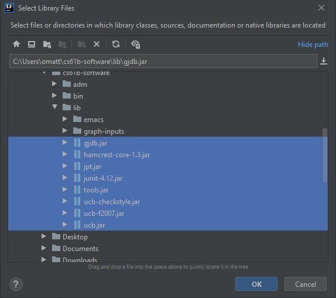
If prompted to add the library to the
lab2module, select "Ok". After these steps the libraries tab should look like the following with all of the.jarfiles listed here.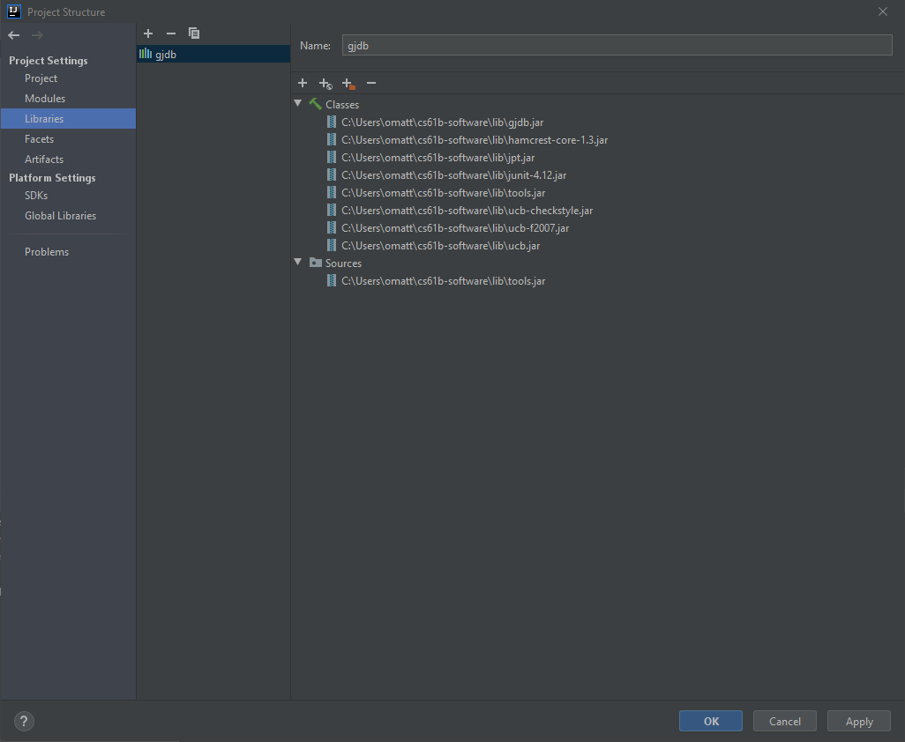
At this point if things have been configured correctly each Java file should have a blue circle next to its name, and when you open the file IntList.java file you should see a green triangle near the line numbers on line 6. At this point you should be all done now and can move on with the lab!
D. Using IntelliJ
IntelliJ Documentation
As we have mentioned, IntelliJ is an IDE that is widely used in industry which has its advantages and disadvantages for you. This means you will learn how to use a real tool, one that you might keep using for years after you graduate. IntelliJ is also incredibly powerful and can allow you to code in ways perhaps unlike anything you have seen before in previous classes. As it is widely used, they have dedicated resources to maintaining documentation. A complete guide can be found here and they also have many helpful video tutorials here.
By looking at these links you can notice one disadvantage of using IntelliJ is that there are so many features and configurable settings that it can be overwhelming. Their documentation and videos often might mention things you have never heard of, but that does not mean you won't be able to use IntelliJ effectively in this class. We will do our best to make this process as painless as it can be for you, and hopefully will help to make you more efficient in programming.
Out of the guide and tutorial videos, we have found the following pages / videos to help jump start learning how to develop in IntelliJ. This list is probably too long to get through in its entirety in addition to the rest of the lab. We have included it here as a reference that you can finish on your own time, and have split things into "Read Now" and "Watch Later". If you have time continue to explore the listed resources and try to experiment with different workflows that work for you.
Read Now
- Overview of the user interface: This is a very high level overview which explains some of the various different windows and names IntelliJ uses to describe them. Understanding this will help you to understand their other reference material.
- Discover IntelliJ IDEA: This guide is longer and explains some of the most important functionality of the IDE along with helpful keyboard shortcuts that can be used. Feel free to just skim this for now, and again if there are sections which use vocabulary you are unfamiliar with that is fine. Some parts of this guide refer to features that we will not use. If the rest of the documentation feels too large, this is a one stop shop which contains explanations of most of the functionality we will use this semester.
Watch Later
- This video shows how to efficiently navigate the IDE with minimal mouse / trackpad action. A lot of the features presented in this video are not needed for use of the editor, but can make you quicker at getting things done. If you have the time try to watch this and if possible follow along. Even just knowing that this functionality exists can be useful for the future.
- This video shows the power of code generation within IntelliJ. Again the features shown here are more advanced than what you will likely need to succeed in this class, but when watching try to pick up on new things that you can work into your use of the IDE
- Finally this video discusses some of the Git (or other version control) integration with the IntelliJ IDE. Throughout this course we will be expecting you to understand the Git CLI (command line interface), but sometimes it may be useful to use some kind of GUI (graphical user interface) to visualize changes to your Git repositories. Again, this is not something we expect students to be using as their primary method of interacting with Git but it is helpful to know that it exists.
Running Java Files
There are a lot of features that you may or may not use in IntelliJ that are described in the above resources, but there are a few that are essential, like running Java files, which everyone will use. Now that you have been acquainted let's try running a program. First we need to open the IntList.java file. You can do so by clicking on the file IntList.java from the left sidebar or you can try using the shortcut "Shift+Shift" to search for it and open it. Either way once you have opened it, next go to the top of the screen and press "Run -> Run... ." A small box should appear where you should click on the IntList option as shown below, and the java file will run!
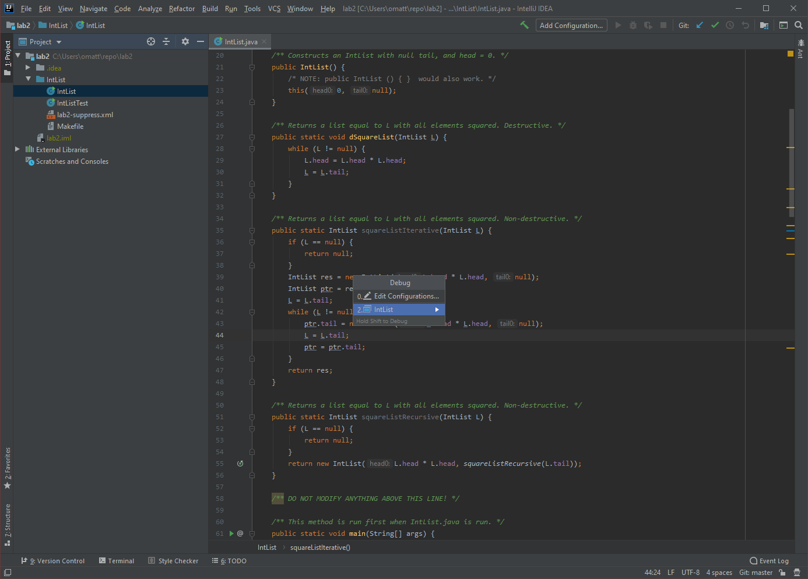
A new pane should appear on the bottom of the IDE which is where the result of your program will be printed out (like before how it was printed into your terminal). Right now, it looks like we have an exception (error) as can be seen below.
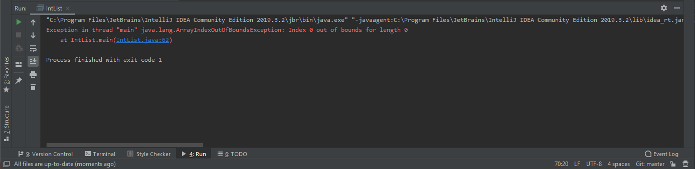
NOTE: If you did not get this exact error go to File -> Project Structure -> Projects and make sure that the selected project SDK is Java 11 not python 3.8 (the option should just be called "11").
The blue link IntList.java:xx indicates the file and line number at which the error or exception occurred. We can click on it to go directly to that line in our code. It looks like that particular print statement prints Hello and then args[0] which is an argument that you provide to a Java program when ran through your terminal (e.g. in java Year 2000 from Lab 1).
We get an error here, because we did not run this program through the command line, so there was never an option for us to provide the command line argument the program is looking for. To mimic this functionality in IntelliJ, we first need to click on "Run -> Edit Configurations" in the top bar. On the blank that says "Program Arguments", put your name which should result in a window that looks like the below. After you have done this, click OK. Let's run our file again. Go to "Run -> Run 'IntList'" and this time you should get an output: Hello, <Your Name>.
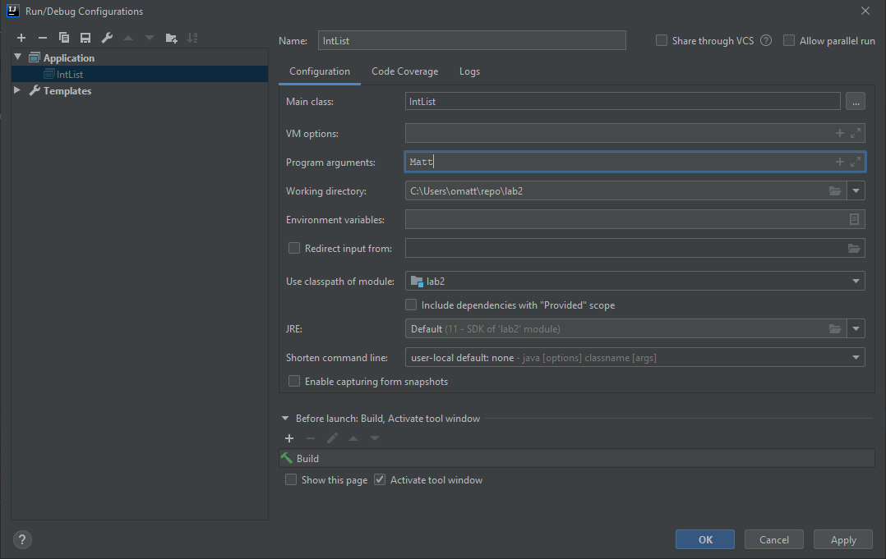
Now, let's take a look at the main method again. We have created an IntList for you. On the line after IntList L1 = list(1, 2, 3, 4, 5);, type sout then press Enter. Did you see what happened? IntelliJ converted sout to System.out.println();, which is how we print things in Java. Cool right? This is called a live template in IntelliJ and is one method of how IntelliJ can make your life easier. There are many other examples and you can even configure your own if you so desire.
Inside the parentheses of your new System.out.println();, add L1. Now run IntList again. Verify that your output is now Hello, <Your Name> on the first line, and [1, 2, 3, 4, 5] on the second line.
Very Brief Debugger Introduction
Now let's try running the debugger on IntelliJ. The debugger is perhaps even more important than the ability to just run code we discussed above. It is single-handedly the most important tool you will use in this course. If you are able to use the debugger you can become a more independent programmer and will hopefully be able to solve any bug! Again this is not meant to be a formal tutorial of the debugger, more so just a cursory introduction. In Lab 3 and HW 1 there will be more instructions and examples for you to learn from.
Many of you might have had experience with using print statements to probe what a program is doing as it runs. Essentially by placing print statements at different places throughout the program, you can see what the state of variables will be throughout. While it is true that print statements can be useful for debugging, often it takes less time and mental effort to find a bug if you use a debugger.
Let's begin by adding another print statement to the main method which will print the sum of the IntList we provided for you. Feel free to use the sum method that we have provided you. To do this first declare an integer variable, sumL1, into which you can save the returned value from sum. Then add a print statement and pass in the variable sumL1. When you are done, run the main method again. You should get a third line with the sum of the integers in the IntList, [1, 2, 3, 4, 5].
You may have noticed that the provided sum method returned a wrong number. The sum should be (1 + 2 + 3 + 4 + 5 =) 15, but sum returned 5. Clearly, there is a bug in the code of sum and we would like to figure out where it is exactly. To do so, we will use the debugger.
The debugger allows us to investigate the code, line by line, to see what is the state of all of the program's variables at every step. To begin using the debugger, we must specify at which line we want to start our "investigation process". To do so, we set a breakpoint near a line of choice. Let's set a breakpoint on the line IntList L1 = list(1, 2, 3, 4, 5);, by clicking once to its left. After setting this breakpoint a red circle should appear as pictured below.
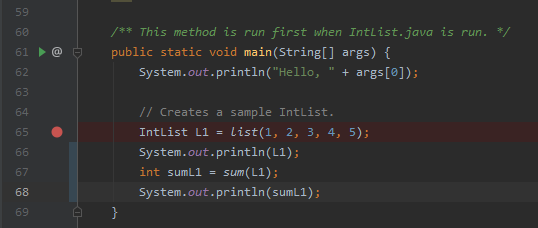
Next go to "Run -> Debug 'IntList'". The debugger pane will now open at the bottom of your IDE window. The program execution has been paused at the breakpoint we've just set! From here, we can step through each line of code to find bugs.
Near the top of the debugger console, you will see some blue and red arrows. Hover your cursor
over them to see what they each say. Then, click the arrow that says "Step Over". This button allows us to continue the execution to the next line of code. Note that we "stepped over" the code contained in list method. Since we know it works properly, there is no reason to debug it. The "Step Over" button is helpful when we want to look at a program from a higher level and skip stepping over every individual line of code.
Keep stepping over until you get to the call to the sum method. Unlike before where we did not care about the internals of list, we want to "Step Into" the sum method call in order to debug it. Again, hover over the blue arrows in the debugging window to find the "Step Into" button then click it.
Once you have stepped into the sum method, continue to step through the code (using "Step Over" since there is no code to step into) until you find what is the problem. Pay attention to the "Variables window at the bottom to see if any values are being updated incorrectly. Talk to your partner about what the error seems to be then fix the code in sum such that the method will return the correct result.
When you finish, you can exit the debugger by clicking on the "Stop" button, which is a red square in the debugging console (off to the side from where the arrows were). Alternitavely, you can also click on the "Resume" button, which will have the debugger execute all the remaining code until another breakpoint is reached, or until the program terminates.
Creating JUnit Tests
Note: You should not have to follow along with this exercise, but you should read and understand it for when you might have to later in the course.
We have not discussed writing tests much, but we have provided you a second file, called IntListTest.java which contains some test methods for you. Had we not provided these tests, then you would have had to write them in order to ensure correctness of your code. Again IntelliJ can be used to speed this process up a bit. Normally, to generate a JUnit test file, open to the file you'd like to test (e.g. IntList.java here), then go to "Navigate -> Test".
A small window will pop up; click "Create New Test..." (here we see two options since we have provided IntListTest.java, but again that might not always be the case). In the next window, select JUnit5 for the testing library. You will then be able to check boxes to indicate which methods you want to test for. You can always write in more tests, but the check box option is nice since IntelliJ will automatically generate the method header for these tests for you.
You can run these tests the same way you would run a regular Java file (as described above). Again, we have provided you the testing file for this lab, so you will not need to generate a new test file.
Using the CS 61B Plugins
Java Visualizer
This plugin contains a built-in version of the Java Visualizer, a tool similar to Python Tutor which you may have used in CS 61A or other previous courses. This tool is intended to help you debug and understand your code, and is integrated into IntelliJ's Java debugger. Students often find this helpful to transition to debugging in IntelliJ, and unfortunately at some point in the semester the code we will be running will become too complicated for the visualizer.
To use the built-in visualizer you must be debugging your code, so you can follow along the steps above to start the debugger again. When your code stops at a breakpoint, you can click the Java Visualizer icon:
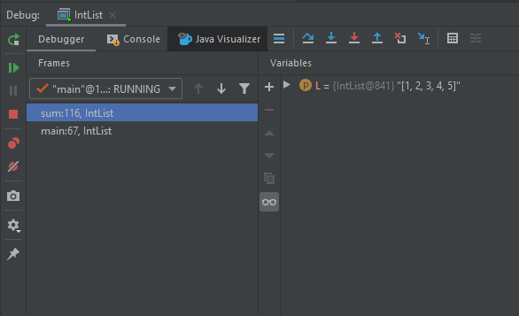
After clicking this button, the Java Visualizer will appear, displaying the stack of the currently paused program as well as a diagram of the different variables.
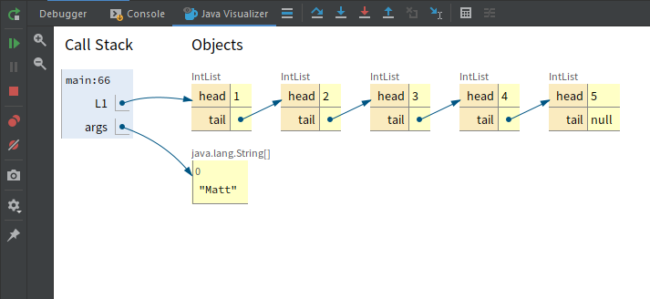
As you continue to step through and pause your code, the visualizer display will update accordingly to show you what's going on in your program. In the coding portions of the lab try using the visualizer to check your understanding.
Style Checking
In this class, you will eventually be required to make sure your code conforms to the official style guide. The CS61B plugin includes a helpful style checker, which will check your code and inform you of any style errors and their locations. This will allow you to fix your style locally so that you do not lose points later on. Note: the sytle checker is not being run for this assignment so you do not need to worry about the style error in the files provided.
To run the style checker, simply right click any file or directories you want to check, and select Check Style in the menu that appearss
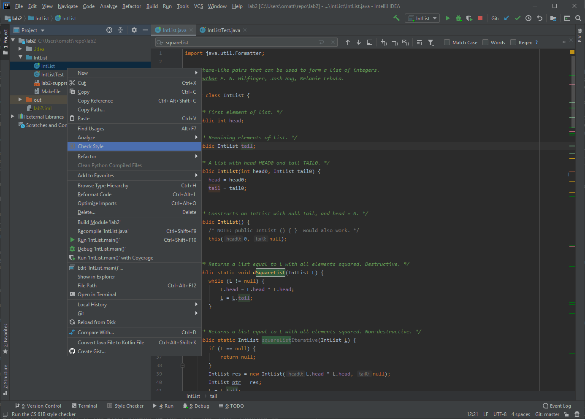
After clicking it the style checker will run. A tool window will appear with the results of the style check, and a list of any errors. Click the links to jump directly to the problematic line of code:
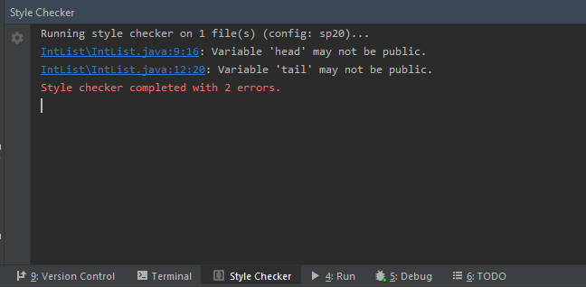
E. Programming with IntLists
Introduction to IntLists
As discussed in Wednesday's lecture, an IntList is our CS61B implementation for a linked list of integers, which you might have already seen if you took CS 61A or other programming courses.
For our definition implementation, an IntList has a head and tail property. It is named an IntList because a set of these objects can represent a list (sequence) of Java int values. The head of the first IntList object is the first element of the list. The tail (another IntList) represents the list of remaining elements (that is, it is a pointer to the IntList object whose head is the second item of the list).
As a result of this correspondence between sets of IntList objects and lists, we often conflate pointers to IntList objects with the lists they head and use the term "IntList" to refer both to individual IntList objects and to the entire set of objects reachable by following the tail pointers. Usually, the distinction is clear from context.
In the IntList.java file, we've added a method called list, which makes it easier to create IntLists. For example, to create an IntList containing the numbers 0, 1, 2,
and 3, we could use the method as follows:
IntList myList = IntList.list(0, 1, 2, 3);After executing the above code, the following will be true about the state of our program. Discuss each of these with your partner and make sure that you understand them. For IntList questions it can be helpful to draw the lists out on paper or on the whiteboard.
myList.headreturns 0myList.tailreturns 1 -> 2 -> 3 -> nullmyList.tail.tail.tailreturns 3 -> nullmyList.tail.tail.tail.tailreturns null
The IntList.list method makes it much easier to create IntLists compared to the naive approach which would look something like the following.
IntList myList = new IntList(0, null);
myList.tail = new IntList(1, null);
myList.tail.tail = new IntList(2, null);
myList.tail.tail.tail = new IntList(3, null);We have also provided a convenient toString method. As we'll see later in the course, this is a useful method, because among other things, the standard print... methods in System.out use it whenever they are asked to print a value of type IntList, so that running the command System.out.println(myList) will print out [0, 1, 2, 3]. Likewise, the "+" (append) operation on values of type String will use the toString method to figure out what string to append when adding an arbitrary object to a String.
Destructive vs. Non-destructive
Let's consider a method dSquareList that will destructively square every item in a list.
IntList origL = Intlist.list(1, 2, 3)
dSquareList(origL);
// origL is now (1, 4, 9)Where dSquareList is defined as follows.
public static void dSquareList(IntList L) {
while (L != null) {
L.head = L.head * L.head;
L = L.tail;
}
}This is a classic example of a destructive method as it iterates through the list and squares each item. This causes the values linked by L to change. In other words, after calling this method once on L, every element in L will be squared.
Examining the code above, we see that the origL variable contains a reference to the created IntList. The value of this variable never changes. By contrast, the L variable in dSquareList moves around inside the method when the line L = L.tail is executed. As we iterate through the method, origL always points to the beginning of the IntList, but L moves to the right until it reaches the null value at the end.
The reason we say that dSquareList is destructive is that we change the values of the original IntList objects, destroying the original data. As we go along, we replace each head value with its square. By the end of the method, L is null, and origL is still pointing
at the beginning of the IntList, but every value in the IntList that origL points to is now squared.
If these ideas don't yet make total sense, ask a TA or lab assistant to draw a diagram of the code execution or you can try to use the Java Visualizer to walk through this example. Pointers and IntLists might seem confusing at first, but it's important that you understand these concepts!
Now, look at at squareListIterative and squareListRecursive in the IntList.java file provided. These methods are both non-destructive. That is, the underlying IntList passed into the methods does not get modified. Try looking at the recursive version with your partner and try to reason why this is non-destructive. Next try look at squareListIterative, then discuss why this too is non-destructive.
The iterative version of a non-destructive method is often quite a bit messier than the recursive version, since it takes some careful pointer action to create a new IntList, build it up, and return it (this is a general trend and there will likely be examples where the opposite is true). Try to understand what this code is doing and discuss with your partner.
Finally, look at the test method testdSquareList in IntListTest.java. This test checks whether or not dSquareList is destructive by making sure that the original list is
mutated. Again discuss with your partner what you think this test is doing and if it makes sense. Try using both the debugger and the Java Visualizer plugin to verify your thoughts!
Your Task
Again, we have not fully introduced JUnit and unit testing but you should be able to write the following code by basing it off of the existing tests. For this assignment we want you to fill in the test testSquareListRecursive in the IntListTest.java file which should test the squareListRecursive method. This test should both check the method for correctness and non-destructiveness. Use the testdSquareList test as inspiration for this new test. Your new tests can be fairly similar in structure to testdSquareList.
Once you have checked both requirements and your own test passes, you're done! Since we have not formally introduced JUnit this test will not be tested heavily for correctness, but still we want to encourage you to try your best to make a test. Unit testing is an incredibly important skill to learn and the sooner you learn it the better!
F. Submission and Grading
This semester we will be grading your work through Gradescope. The instructions for submitting assignments are the same as in the previous lab and homework. First make sure that you have added and committed your latest work before continuing. For this lab you should first tag the commit you want to submit with the following command.
git tag lab2-0Then you need to push both you code and your tags which can be done with the following two commands.
git push
git push --tagsOnce you complete these steps, your assignment will automatically be uploaded to Gradescope and you should see autograder results within a few minutes. This is a new feature of the course and we expect there may be some kinks to iron out. So if anything doesn't look right (e.g. you don't see a submission or it says failed to generate a proper output), please report this to course staff so we can investigate.
At this point you should also be able to see your graded work on Gradescope for Lab 1 (we manually ran the grader based on your latest submission). If you do not see any submission or have not yet submitted, try submitting Lab 1 (through the same process as above) and let us know if there are any problems.
You should make sure that you have registered with the same email address that is associated with your Gradescope account (this should be your @berkeley.edu email address). You will have to run the command re-register to set the email appropriately otherwise this submission process will not work.
Also you should never be submitting code directly through Gradescope. The only way you should submit your code is by making a tag and pushing that tag. If you log into Gradescope and try to submit an assignment directly it will prompt you to use a BitBucket account. Please ignore this and again only submit through the Git commands that we have shown here.